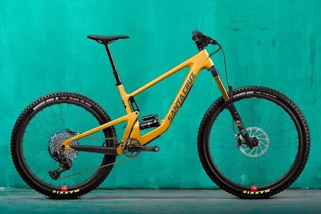

Recorridos guiados
Descubre diferentes lugares de Medellín acompañado de un guía.
Alquiler de bicicletas en Medellín
Descubre Medellín sobre dos ruedas y disfruta de nuevas experiencias en bicicleta.
Accesos rápidos
Somos Rueda Libre, un servicio de alquiler de bicicletas para conocer Medellín de una manera diferente.

Descubre diferentes lugares de Medellín acompañado de un guía.
Alquila una bicicleta para recorrer la ciudad a tu propio ritmo.
Explora rutas para disfrutar de la ciudad y sus alrededores.
Dirección: ¿Cómo llegar a Rueda Libre?
Correo electrónico: hola@ruedalibre.example